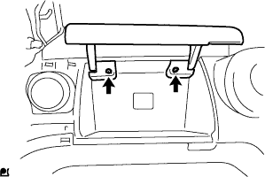

ヘッドランプレベリングコンピュータASSY 取り付け |
| 1. ヘッドランプレベリング コンピュータASSY取り付け |
ロケーションを合わせる。
スクリューで、ヘッドランプレべリングコンピュータASSYを取り付ける。
コネクターを接続する。
| 2. インストルメントパネル W/パッセンジャーエアバッグASSY取り付け |
スクリュ<B>2本で、ヒータ ツウ レジスタ ダクト No.1をインストルメントパネル W/ パッセンジャーエアバッグASSYに取り付ける。

スクリュ<B>2本で、サイド デフロスタノズル ダクト No.1をインストルメントパネル W/ パッセンジャーエアバッグASSYに取り付ける。
スクリュ<B>2本で、ヒータ ツウ レジスタ ダクト No.3をインストルメントパネル W/ パッセンジャーエアバッグASSYに取り付ける。
スクリュ<B>2本で、サイド デフロスタノズル ダクト No.２をインストルメントパネル W/ パッセンジャーエアバッグASSYに取り付ける。
インストルメントパネル W／パッセンジャーエアバッグASSYの車両前方側の位置を先に合わせ、中央部のコネクタおよび、クランプを接続し、手前側のツメ7箇所のかん合をあわせ、スクリュ<C>もしくは、<D>４本でインストルメントパネル W／パッセンジャーエアバッグASSYを取り付ける。
| 3. インストルメントパネルフィニッシュ プレート取り付け |
 |
ツメ4箇所のかん合を合わせ、スクリュ<B>1本で、インストルメントパネル フイニツシユプレートを取り付ける。
| 4. インストルメントクラスタフィニッシュ パネルSUB-ASSY CTR取り付け |
 |
ツメ12箇所のかん合を合わせ、インストルメントクラスタフイニツシユパネル CTRを取り付ける。
| 5. インストルメントパネル レジスタASSY NO.1取り付け |
 |
ツメ5箇所のかん合を合わせ、インストルメントパネルレジスタASSY No.1を取り付ける。
| 6. グローブコンパートメント ドアSUB-ASSY取り付け |
|  |
スクリュ<J>2本でグラブコンバートメントドアを取り付ける。
| 7. コンビネーションメータASSY取り付け |
 |
コネクタを接続しコンビネーシヨンメータASSYを車両前方に押し込みクリップのかん合を合わせる。
スクリュー2本でコンビネーシヨンメータASSYを取り付ける。
| 8. インストルメントクラスタフィニッシュ パネル NO.1取り付け |
 |
インストルメントクラスタ フイニツシユパネルを車両前方に押し込み、ツメのかん合を合わせ取り付ける。
| 9. フロントピラー ガーニッシュ LWR LH取り付け |
 |
ツメ4箇所のかん合を合わせ、フロントピラーガーニッシュ LWR LHを取り付ける。
| 10. フロントピラー ガーニッシュ LH取り付け |
 |
ガーニッシュ下部のツメを先に入れる。
全てのクリップをかん合させ、フロントピラーガーニッシュLHを取り付ける。
| 11. ピラーNO.1 ガーニッシュ LH取り付け |
ツメをかん合させピラーNO.1ガーニッシュを取り付ける。
| 12. リヤドア オープニングトリム ウェザストリップ LH取り付け |
ウェザストリップのペイントマーク(黄色および白色、どれか1箇所)とボデー側のウエザストリップ取り付け用切り欠き部(矢印部分)を合わせ、リヤドアオープニングトリムウエザストリップLHを取り付ける。

| 13. フロントピラー ガーニッシュ RH取り付け |
 |
ガーニッシュ下部のツメを先に入れる。
全てのクリップをかん合させ、フロントピラーガーニッシュRHを取り付ける。
| 14. フロントピラー ガーニッシュ LWR RH取り付け |
 |
ツメをかん合させ、フロントピラーガーニッシュLWR RHを取り付ける。
| 15. フロントドア オープニングトリム ウェザストリップ RH取り付け |
 |
ウェザストリップのペイントマーク(白色、どちらか1箇所)を合わせ、フロントドアオープニングトリムウエザストリップRHを取り付ける。
| 16. バッテリ ターミナル接続 |
| 17. エアバッグウォーニングランプ点検 |
参照)| 18. バッテリターミナル脱着時の初期化 |
参照| 19. ヘッドランプレベリングコンピュータASSY初期化手順 |
車両状態確認
車両を以下の状態にする。
ウォーニング表示確認(*1)
イグニッションスイッチをOFF→ONにして、ウォーニング表示を確認する。
初期化操作
 |
SST(ダイアグノーシスチェックワイヤNo.2)を使用して、DLC3コネクターの8(LVL)端子←→4(CG)端子間を短絡させる。
DLC3コネクターの端子を短絡後20秒以内に、ヘッドランプディマスイッチHEAD→OFF操作を3回以上繰り返す。(*2)
ウォーニング表示を確認する。
| 作業内容 | ウォーニング表示 |
|---|---|
| ヘッドランプレベリングコンピュータASSY交換(新品) | 2Hz 2回点滅(点滅間隔1.25秒)→2Hz 3回点滅後、消灯(初期化正常終了) |
| ヘッドランプレベリングコンピュータASSY脱着、ハイトコントロールセンサ交換·脱着、サスペンション交換など | 点滅なし[初期化データ有効時]または2Hz 2回点滅(点滅間隔1.25秒)[初期化データ無効時]→2Hz 3回点滅後、消灯(初期化正常終了) |
| 20. ヘッドランプ調整前作業 |
タイヤ空気圧を正確に調整する。
運転席に1名(55kg)乗車する。
エンジンを始動し、バッテリを充電状態にする。
燃料、オイル、水は満タンにする。
車両を上下に揺すり、サスペンションを正規状態に落ち着かせる。
レベリングスイッチのダイヤルを0にする。(マニュアルレべリング車)
| 21. ヘッドランプ光軸調整(ロービーム テスター使用時) |
テスターとヘッドランプレンズの距離をテスターの規定値にする。
車両にテスターを正対させる。
ヘッドランプテスターをセットする。
テスターの角度調整つまみを下方10ｃｍ、左右0ｃｍにする。
ヘッドランプの中心にテスターの集光レンズを合わせる。
他方のランプの光の影響を受けない処置をする。
ヘッドランプをロービームで点灯する。
使用するヘッドランプテスターの取扱説明書に基づき、ロービームの光軸を調整する。

| 22. ヘッドランプ光度点検(ロービームテスター使用時) |
光軸調整後ヘッドランプテスターで光度を点検する。
| 23. ヘッドランプ光軸調整(ロービーム スクリーン使用時) |
 |
厚手の白紙を用意する。
 |
図の調整用スクリーンを作成する。
テスターとヘッドランプレンズの距離を3ｍにする。
車両にテスターを正対させる。
ヘッドランプテスターをセットする。
ヘッドランプ中心にテスターの集光レンズ中心を合わせる。
テスターの集光レンズ中心に調整用スクリーンの中心穴を合わせテープなどで貼り付ける。
他方のランプの光の影響を受けない処置をする。
ヘッドランプをロービームで点灯する。
基準線から大きくはずれる場合は、明暗分割線を基準線の位置に合うようにロービームの光軸を調整する。
| 24. ヘッドランプ光度点検(ロービーム·ハイビームテスター使用時) |
テスターとヘッドランプレンズの距離をテスターの規定値にする。
車両にテスターを正対させる。
 |
ヘッドランプテスターをセットする。
テスターの角度調整つまみを下方11ｃｍ、左方23ｃｍにする。
ヘッドランプの中心にテスターの集光レンズを合わせる。
他方のランプの光の影響を受けない処置をする。
ヘッドランプをロービームで点灯する。
光軸調整後ヘッドランプテスターで光度を点検する。
| 25. ヘッドランプ光軸調整(ハイビーム テスター使用時) |
テスターとヘッドランプレンズの距離をテスターの規定値にする。
車両にテスターを正対させる。
ヘッドランプテスターをセットする。
テスターの角度調整つまみを下方ヘッドランプ中心の高さ1/5ｃｍ、左右とも0ｃｍにする。(左側ヘッドランプ)
テスターの角度調整つまみを下方ヘッドランプ中心の高さ1/5ｃｍ、左方5ｃｍにする。(右側ヘッドランプ)
ヘッドランプ中心にテスターの集光レンズを合わせる。
他方のランプの光の影響を受けない処置をする。
ヘッドランプをハイビームで点灯する。
使用するヘッドランプテスターの取り扱い要領に基づき、ハイビームの光軸を調整する。
| 26. ヘッドランプ光度点検(ハイビームテスター使用時) |
光軸調整後ヘッドランプテスターで光度を点検する。